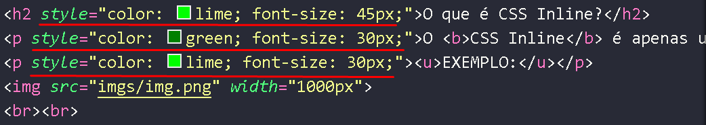

CSS é o responsável pela parte estética do site, isso inclui mudar cor de texto, cor de fundo, tamanho da fonte e muito mais.
O CSS é na realidade um complemento para o HTML, embora seja considerado uma linguagem de marcação na prática.
O CSS Inline é apenas uma das maneiras de aplicar estilo CSS no HTML, isso se baseia em aplicar as propriedades CSS diretamente em uma tag desejada, ou seja, aplica somente naquela tag.
EXEMPLO:

Site feito por Deyvid Ribeiro de Paula
Data de criação: 08/04/2024
Horário (aproximado): 20:26